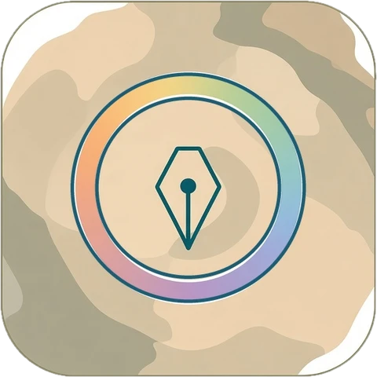
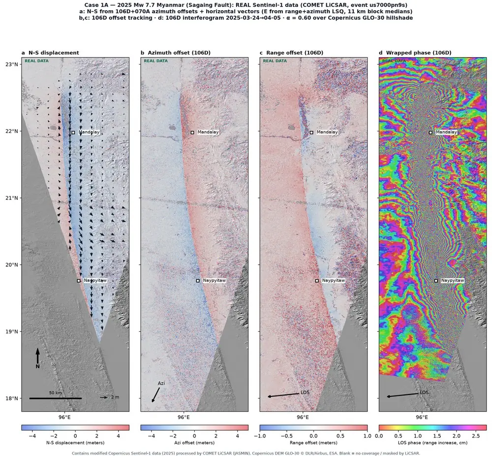
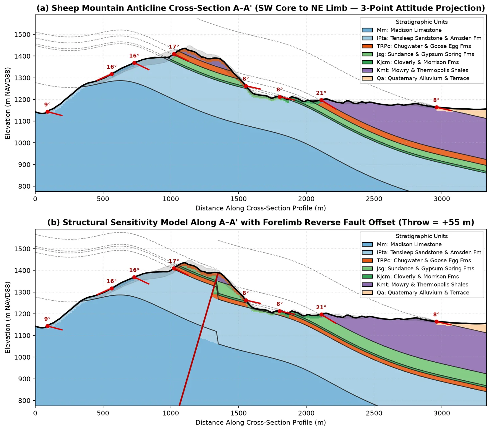
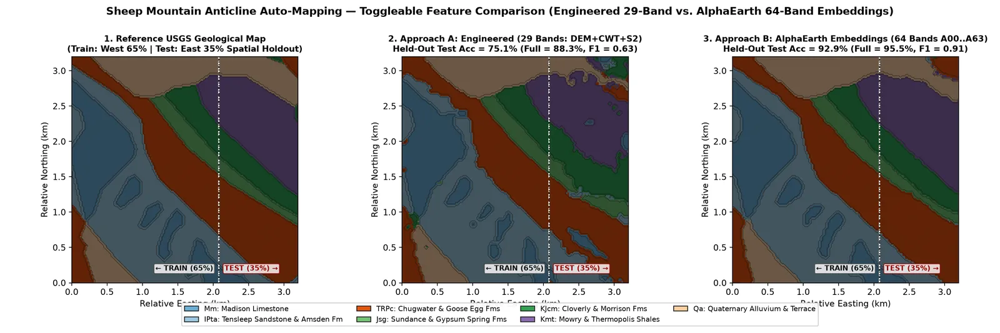
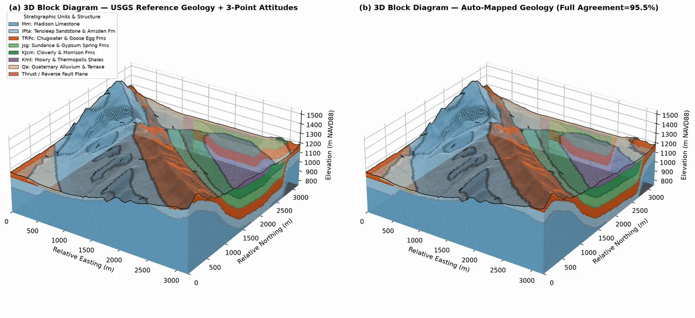

Python · Rust · Remote sensing and mapping
pyGeoMapper
pyGeoMapper maps surface change and geology from satellite images and DEMs, all the way to 3D block diagrams you can open in a browser. Python with a Rust core.
- Version0.1.0
- LicenseAGPL-3.0 or later

Overview
pyGeoMapper maps what changed on the ground, and what it's made of, using satellite images and elevation models (DEMs). I wanted one place to go from raw rasters to something a geologist can actually read: change maps after a landslide, flood, wildfire, earthquake, volcano or glacier event, unit maps scored against a real geologic map, and cross-sections and 3D block diagrams you can open in a browser. It's Python with a Rust core. (Not related to The-Magicians-Code/PyGeoMapper.)

Examples
Five notebooks walk through every module with public data.




Key features
Surface change
DEM of Difference, spectral change and InSAR/GNSS displacement for hazards.
Spectral and terrain
Spectral indices and multiscale terrain metrics.
Geological mapping
Auto-mapping of geologic units, scored on held-out blocks.
Sections and 3D
Cross-sections, 3D block/fence diagrams and an offline WebGL viewer.
Installation
pip install pygeomapperExtra features (STAC search, ML, 3D views, spectral and DEM tools) are optional add-ons; the README lists them.
Citation
Lai, L.S.-H. (2026) pyGeoMapper. Zenodo, https://doi.org/10.5281/zenodo.23832020
pyGeoMapper is under the GNU Affero General Public License 3.0 or later.